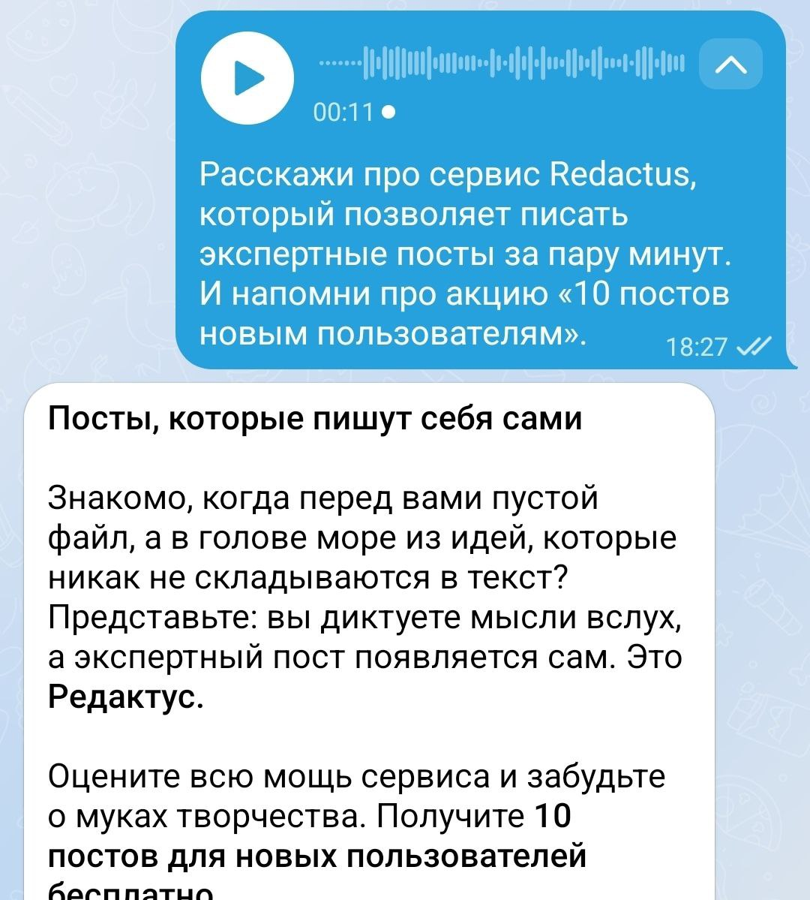

- ✔ Пришла идея? Просто запишите голосовое сообщение телеграм-боту.
- ✔ Он подготовит текст по примеру ваших прошлых постов.
- ✔ Добавит заголовок, структуру, абзацы, эмодзи и CTA.
- ✔ Даст рекомендации по картинкам для финального поста.
Создавайте посты за 3 минуты. Голосом, в вашем стиле
Записали голосовое — получили готовый текст. Редактус превращает ваши идеи в посты, которые звучат как вы.

Выкладывайте экспертные посты без рутины
Сервис анализирует ваши статьи и превращает голосовые заметки в вычитанные публикации за пару минут.
Попробуйте Редактус в Telegram
Передайте идею боту и получите готовый пост в своём стиле вместе с рекомендациями по визуалу.
Выкладывайте посты без пауз и перегрузок
- • Тексты читаются как ваши. Сервис берёт за пример ваш канал.
- • Сделать пост из идеи можно за пару минут с телефона.
- • Отправьте старый черновик и получите готовый к публикации пост.
- • Сервис предложит какие фото или кейсы стоит добавить.
Редактус закрывает рутину, чтобы вы фокусировались на идеях и экспертизе.
Надоело тратить 3 часа в неделю на рутину, но нужно выпустить 2-3 поста?
Приходится либо выкладывать реже, либо писать через силу. Мало найти идею — нужно ещё набрать текст и красиво оформить под канал.
Хотите оптимизировать блог, чтобы выделить время на более важные задачи?
Но видение и авторский стиль тяжело повторить. GPT выдаёт пластиковые тексты, отпугивающие подписчиков. Копирайтер не эксперт в вашей нише и часто пишет не то.
Выберите формат поста
В боте доступны быстрые обновления и глубокие разборы. Готовый текст сразу соответствует выбранному формату.
Запишите голосовое или идею текстом
Редактус понимает экспертные мысли и подстраивает пост под ваш стиль и каналы.
Отредактируйте и опубликуйте
Сервис предложит улучшения, варианты CTA и рекомендации по визуалам — остаётся нажать «Опубликовать».
Ведите блог в удовольствие
Сервис забирает рутину оформления: пришла идея — надиктовали — получили пост и рекомендации по визуалу.
Освободите время для важного
Редактус держит ваш tone-of-voice, добавляет структуру, CTA и эмодзи, чтобы вы фокусировались на сути.
Тарифы под ваши задачи
Начните бесплатно, а когда контента станет больше — переходите на подходящий тариф.
Бесплатный старт
10 постов и полный доступ к базовым инструментам, чтобы протестировать сервис.
Free
- Настройка базового стиля
- Надиктовка голосом
- Рекомендации по улучшению
Начало
Для стабильного контента в личном блоге.
1 800₽
в месяц• Написание 10 постов/месяц
• Настройка вашего стиля
• Надиктовка голосом
• Рекомендации как улучшить тексты
Стандарт
Популярный выбор: больше постов и гибкая стилистика.
3 500₽
в месяц• Написание 20 постов/месяц
• Всё из тарифа Старт
• Точечная донастройка стиля
• Ранний доступ к новым функциям
• Оплата по счёту
Студия
Для агентств и студий с несколькими каналами.
6 500₽
в месяц• Написание 50 постов/месяц
• Всё из тарифа Стандарт
• До трёх каналов на ведении
• Можно докупать посты и каналы
Нужны спецусловия? Оставьте заявку в форме.
Сервис подойдёт для
Редактус адаптируется под ваши форматы: экспертные заметки, кейсы, апдейты и маркетинговые подборки.
Эксперт
Выкладывайте мысли и экспертные посты в своём стиле. Редактус органично напомнит об инфопродуктах.
Сфера услуг
Регулярно напоминайте о сервисах: анонсы, кейсы, акции и отзывы оформлены за минуты.
Стартап
Оптимизируйте контент-маркетинг. Публикуйте инсайты и апдейты без простоев.
SMM / Продюсер
Ведите несколько клиентов в их стиле. Ускоряйте процесс и берите больше проектов.
Проектная студия
Прогревайте аудиторию экспертными постами и кейсами. Редактус ненавязчиво упоминает услуги.
Редактус объединяет лучшие стороны привычных инструментов
Оставляете авторский стиль, убираете рутину и получаете тексты быстрее.
Готовить всё самостоятельно
Максимум аутентичности, но каждый пост — это 40-60 минут набора текста и оформления. Редактус сохраняет голос и снимает рутину.
Использовать GPT
Современно, но требует промптов и тюнинга. Часто получается «резиновый» текст. Редактус работает прямо в Telegram и опирается на ваши прошлые посты.
Нанимать копирайтера
Дорого и не всегда попадает «как в голове эксперта». Редактус делает черновик «как вы», который легко докрутить.
Редактус объединяет эти плюсы: без потери вашего голоса, без сложных промптов и без передачи контрольной роли сторонним авторам.
FAQ
Ответы на самые частые вопросы про подключение, настройки и работу с ботом.
Выберите тариф Стандарт или Премиум — туда входит донастройка стилистики. Мы повторим подписи, формат общения и заголовки.
Около минуты. Перейдите в @redactusbot, при желании поделитесь ссылкой на канал. Если понадобится донастройка, она включена в тарифы Стандарт и Бизнес.
Отредактируйте текст или запустите генерацию снова. Если ситуация повторяется, мы точечно донастроим сервис под ваши правила — в тарифах Стандарт и Бизнес это входит.
Редактус экономит время и удерживает ваш стиль. GPT требует промптов и выдаёт обезличенный текст, клиенты жалуются на «роботизированность».
Мы не просим доступ. Достаточно ссылки, чтобы изучить канал как читатель. Если кто-то просит доступ от нашего имени — напишите @hitreno.
Просто раскройте мысль и опубликуйте
Редактус оформит пост, предложит визуалы и оставит ваш голос. Перейдите в бота и протестируйте сценарий бесплатно.